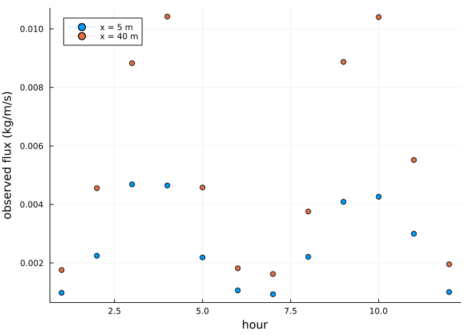
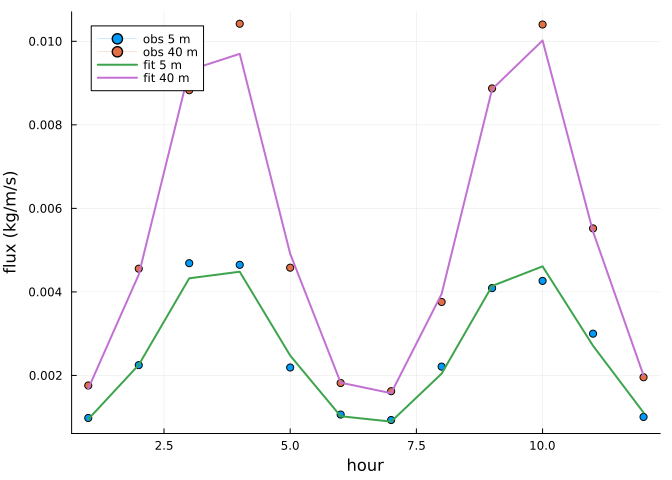

Calibration
Simon Frost
Overview
Transport constants such as Bagnold’s Cb and the adaptation time T are rarely known for a site and are calibrated against measurements. Because an AeolisProblem can be remade with new parameters, any optimiser can drive it; this vignette fits Cb and T to synthetic observations of sand flux with Optimization.jl and a derivative-free Nelder-Mead search from Optim.jl; the model’s iterations for supply limitation make its output piecewise smooth in the parameters, so a method without gradients is a robust choice.
ENV["GKSwstype"] = "100"
using Aeolis
using Optimization
using OptimizationOptimJL
using Plots
using RandomObservations
A flat sandy transect with two flux sensors: one at x = 5 m, inside the zone where the flux is still adapting to the wind, and one at x = 40 m, where it is saturated. The “true” parameters are Cb = 1.8 and T = 0.6 s; the observations are hourly fluxes with 5 % noise.
x = collect(0.0:1.0:60.0)
t = 0.0:1800.0:86400.0
wind = hcat(t, 9 .+ 4 .* sin.(t ./ 7000.0) .^ 2, fill(270.0, length(t)))
base = AeolisParameters(; xgrid_file=x, bed_file=fill(2.0, length(x)), grain_size=0.0003,
wind_file=wind, dt=900.0, tstop=12 * 3600.0, output_times=3600.0,
output_vars=[:qs])
prob = AeolisProblem(base)
sensors = [6, 41]
model_flux(Cb, T) = transect(solve(remake(prob; Cb, T)), :qs)[sensors, 1, 2:end]
truth = model_flux(1.8, 0.6)
rng = Xoshiro(1)
obs = truth .* (1 .+ 0.05 .* randn(rng, size(truth)))
plot(1:size(obs, 2), permutedims(obs); marker=:circle, lw=0, xlabel="hour",
ylabel="observed flux (kg/m/s)", label=["x = 5 m" "x = 40 m"])
Objective
The sum of squared relative errors; parameters are optimised on a log scale so they stay positive:
function loss(θ, _)
Cb, T = exp.(θ)
pred = model_flux(Cb, T)
return sum(abs2, (pred .- obs) ./ (obs .+ 1e-6))
end
[(T=T, loss=round(loss(log.([1.8, T]), nothing); sigdigits=3)) for T in (0.1, 0.3, 0.6, 1.0, 2.0)]5-element Vector{@NamedTuple{T::Float64, loss::Float64}}:
(T = 0.1, loss = 11.1)
(T = 0.3, loss = 2.97)
(T = 0.6, loss = 0.102)
(T = 1.0, loss = 1.04)
(T = 2.0, loss = 4.55)Fitting
f = OptimizationFunction(loss)
op = OptimizationProblem(f, log.([1.0, 2.0]))
res = solve(op, NelderMead(); maxiters=150)
fitted = exp.(res.u)
(Cb=round(fitted[1]; digits=3), T=round(fitted[2]; digits=3), loss=res.objective)(Cb = 1.748, T = 0.598, loss = 0.08233236790948349)pred = model_flux(fitted...)
plot(1:size(obs, 2), permutedims(obs); marker=:circle, lw=0, label=["obs 5 m" "obs 40 m"],
xlabel="hour", ylabel="flux (kg/m/s)")
plot!(1:size(obs, 2), permutedims(pred); lw=2, label=["fit 5 m" "fit 40 m"])
The sensor inside the adaptation zone carries the information about T, and the sensor where the flux is saturated the information about Cb. With sensors only far downwind, the flux is saturated everywhere they measure and T cannot be identified.